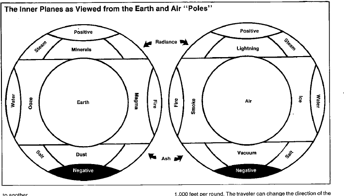

生存 · Survival
呼吸
除元素空气位面外，内层位面通常没有可供普通生物呼吸的空气。没有特殊能力、魔法或合适的环境，旅行者会窒息；《地城生存指南》中的憋气规则可用于判定。
时间
内层位面的主观时间是原初位面的两倍。旅行者会更快感到饥饿、口渴和疲劳；需要长时间研究法术或恢复能力时，也要按当地时间计算。
重力
内层位面没有天然的“上”和“下”。有知生物可以把任意方向认作下方，重力便朝那个方向作用；若没有足够质量支撑，旅行者会沿当前方向坠落。改变“下”的方向可以停止坠落，也可以让旅行者沿新的方向加速。无生命物体会保持惯性，直到与有知生物接触。
在元素位面中落下通常按每轮 1,000 英尺处理。旅行者可以在下落中改变方向；停止需要重新建立重力方向。被击晕或失去意识的旅行者会保持原来的方向和速度，直到恢复意识。
食物与饮水
旅行者的饥饿与口渴速度约为原初位面的两倍。除非食物和水由有知生物携带，否则它们会受到所在位面的物质影响：在元素火焰位面保持食物几乎不可能，在元素水位面则需要先处理水的形态和压力。
视觉与感官
可见距离随位面而变。空气位面最适合观察，元素土位面最差；在某些位面中，红外视觉、紫外视觉或普通光线可能失效。旅行者应把位面本身的感官限制放在种族与法术视觉能力之前。
